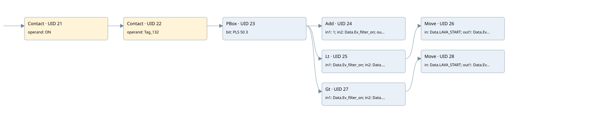

next valve
filter · 검색 색인 순서 18 · 원본 내부 NID 추정 27
백업 PLF 원본의 2755381 바이트 위치에서 복원한 XML. 검색 문서 1899의 객체 키 161022007154000000000000와 연결했다. 이름 해석 14/14개. 남은 RefId는 상수 또는 미해석 참조다.
연결 구조 다시 그리기
원본 Part/PCon/Wire를 이용한 연결도다. TIA 화면의 래더 배치 또는 실행 결과를 재현한 그림은 아니다. 핀 연결은 아래 표와 원본 XML을 기준으로 읽는다. 노드 위에 마우스를 두면 피연산자 이름을 볼 수 있다.

접점·코일·블록과 피연산자
| Part UID | Gate | Negated 핀 | 연결 피연산자 |
|---|---|---|---|
| 21 | Contact | operand = ON | |
| 22 | Contact | operand = Tag_132 | |
| 23 | PBox | bit = PLS 50 3 | |
| 24 | Add | in1 = 1; in2 = Data.Ev_filter_on; out = Data.Ev_filter_on | |
| 25 | Lt | in1 = Data.Ev_filter_on; in2 = Data.LAVA_START | |
| 26 | Move | in = Data.LAVA_START; out1 = Data.Ev_filter_on | |
| 27 | Gt | in1 = Data.Ev_filter_on; in2 = Data.LAVA_END | |
| 28 | Move | in = Data.LAVA_START; out1 = Data.Ev_filter_on |
접점 경로를 펼친 조건식
Contact·O/A·비교기의 원본 연결을 읽기 쉽게 펼친 보조 해석이다. POWER는 전원 레일 시작을 뜻한다. 호출 블록·에지·타이머의 내부 동작과 다중 쓰기 순서는 이 표로 실행 검증하지 않았다. 미해석 핀과 RefId는 원문 연결표에서 확인한다.
| UID | 동작 | 대상 | 원본 접점 경로 | 내용 |
|---|---|---|---|---|
| 26 | Move | Data.Ev_filter_on | (PBox UID 23.out (블록 동작 확인) AND [Data.Ev_filter_on < Data.LAVA_START]) | Move 입력 Data.LAVA_START |
| 28 | Move | Data.Ev_filter_on | (PBox UID 23.out (블록 동작 확인) AND [Data.Ev_filter_on > Data.LAVA_END]) | Move 입력 Data.LAVA_START |
원본 배선 연결
| Wire UID | 동일 Wire 연결 끝점 |
|---|---|
| 43 | Powerrail {} ↔ Part 21.in |
| 44 | ORef 29 (ON) ↔ Part 21.operand |
| 67 | Part 21.out ↔ Part 22.in |
| 46 | ORef 30 (Tag_132) ↔ Part 22.operand |
| 45 | Part 22.out ↔ Part 23.in |
| 48 | ORef 31 (PLS 50 3) ↔ Part 23.bit |
| 49 | Part 23.out ↔ Part 24.en ↔ Part 25.pre ↔ Part 27.pre |
| 50 | ORef 32 (1) ↔ Part 24.in1 |
| 51 | ORef 33 (Data.Ev_filter_on) ↔ Part 24.in2 |
| 52 | Part 24.out ↔ ORef 34 (Data.Ev_filter_on) |
| 53 | ORef 35 (Data.Ev_filter_on) ↔ Part 25.in1 |
| 54 | ORef 36 (Data.LAVA_START) ↔ Part 25.in2 |
| 55 | Part 25.out ↔ Part 26.en |
| 56 | ORef 37 (Data.LAVA_START) ↔ Part 26.in |
| 57 | Part 26.out1 ↔ ORef 38 (Data.Ev_filter_on) |
| 58 | ORef 39 (Data.Ev_filter_on) ↔ Part 27.in1 |
| 59 | ORef 40 (Data.LAVA_END) ↔ Part 27.in2 |
| 60 | Part 27.out ↔ Part 28.en |
| 61 | ORef 41 (Data.LAVA_START) ↔ Part 28.in |
| 62 | Part 28.out1 ↔ ORef 42 (Data.Ev_filter_on) |
식별자 해석 근거 14개
| ORef UID | RefId | 이름 | IdentXmlPart 파일 | 해석 방법 |
|---|---|---|---|---|
| 29 | 52 | ON | 0594-IdentXmlPart.xml | UID/RID + search-text + NID agreement |
| 30 | 61 | Tag_132 | 0594-IdentXmlPart.xml | UID/RID + search-text + NID agreement |
| 31 | 89 | PLS 50 3 | 0594-IdentXmlPart.xml | UID/RID + search-text + NID agreement |
| 32 | 70 | 1 | 0597-IdentXmlPart.xml | literal candidate: UID/RID/NID + nearby named declarations + search-text agreement |
| 33 | 3 | Data.Ev_filter_on | 0596-IdentXmlPart.xml | UID/RID + search-text + NID agreement |
| 34 | 3 | Data.Ev_filter_on | 0596-IdentXmlPart.xml | UID/RID + search-text + NID agreement |
| 35 | 3 | Data.Ev_filter_on | 0596-IdentXmlPart.xml | UID/RID + search-text + NID agreement |
| 36 | 76 | Data.LAVA_START | 0596-IdentXmlPart.xml | UID/RID + search-text + NID agreement |
| 37 | 76 | Data.LAVA_START | 0596-IdentXmlPart.xml | UID/RID + search-text + NID agreement |
| 38 | 3 | Data.Ev_filter_on | 0596-IdentXmlPart.xml | UID/RID + search-text + NID agreement |
| 39 | 3 | Data.Ev_filter_on | 0596-IdentXmlPart.xml | UID/RID + search-text + NID agreement |
| 40 | 78 | Data.LAVA_END | 0596-IdentXmlPart.xml | UID/RID + search-text + NID agreement |
| 41 | 76 | Data.LAVA_START | 0596-IdentXmlPart.xml | UID/RID + search-text + NID agreement |
| 42 | 3 | Data.Ev_filter_on | 0596-IdentXmlPart.xml | UID/RID + search-text + NID agreement |
검색 코드 보조 자료
참조 명칭을 찾기 위한 자료이며 실행 순서나 AND/OR 관계는 위 연결표로 확인한다.
"on" "tag_132" "pls 50 3" add 1 "data".ev_filter_on "data".ev_filter_on "data".lava_start move "data".lava_start "data".ev_filter_on "data".ev_filter_on "data".lava_end move "data".lava_start "data".ev_filter_on "data".ev_filter_on